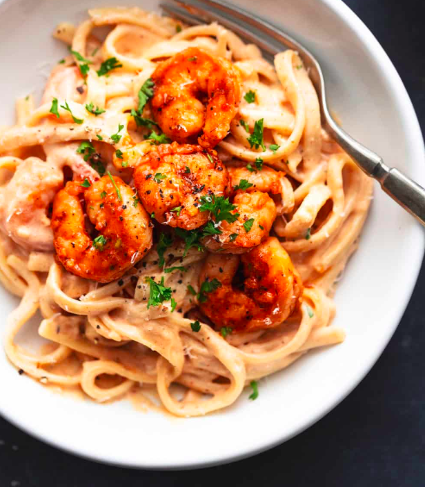

Cajun Shrimp Alfredo
Ingredients
- 1 LB Shrimp
- 1 TBS Cajun Seasoning
- 4 TBS Butter
- 1 TSP Olive Oil
- 1 TBS Minced Garlic
- 3 TBS Flour
- 2 Cups Milk
- 1 Cup Pasta Water
- 8 OZ Fettuccine Noodles
- 1 Cups Grated Parmesan
- 1 TSP Salt
- Chopped Parsley (Optional)
Directions
- Cook fettuccine noodles according to package directions.
- Drain & toss with a bit of olive oil, and set aside. Remember to reserve 1 Cup of Pasta Water!
- In a large skillet melt 1 tablespoon butter. Stir in 1 teaspoon olive oil
- Add shrimp to the skillet and sprinkle Cajun seasoning over the shrimp. Use tongs or a slotted spoon to transfer shrimp to a dish and cover to keep warm.
- Melt butter over medium heat. Stir in garlic for 1 minute til fragrant.
- Stir in flour for 1 minute. Gradually whisk in milk, then pasta water.
- Add parmesan cheese and salt and stir until parmesan is dissolved.
- Add cooked fettuccine noodles to the skillet and return shrimp to the skillet.
- Garnish with parsley if desired This is an optional step
- Serve